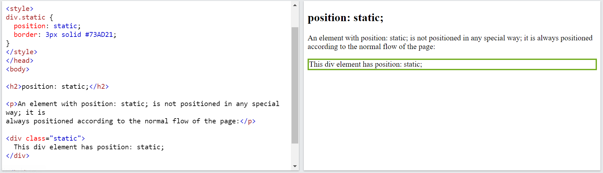
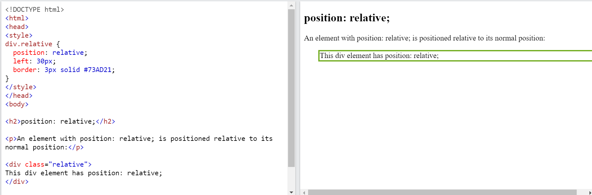
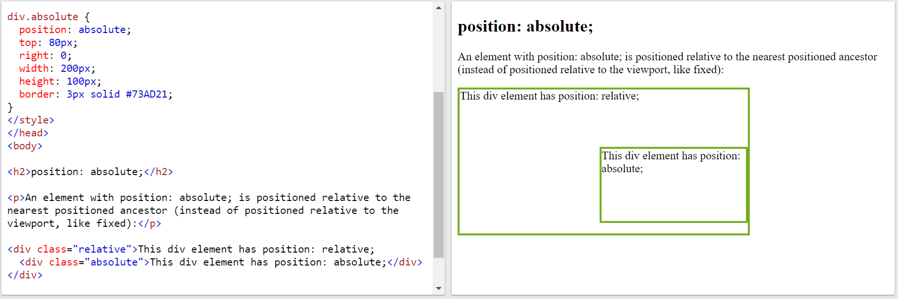
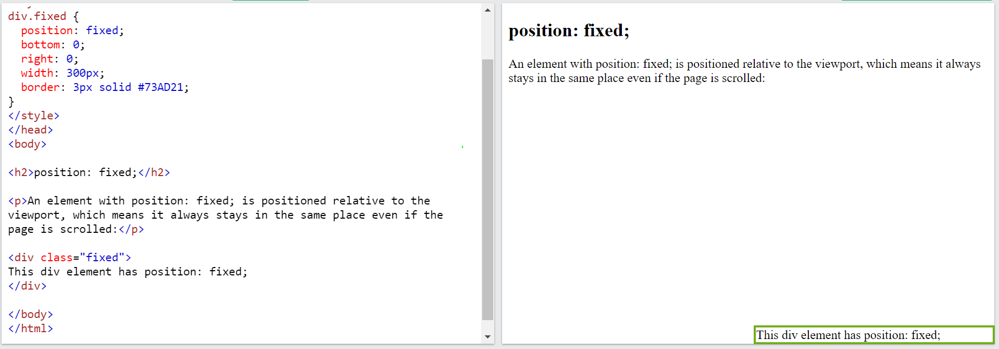

CSS position is one of the key topics in CSS which helps to understand how to place HTML elements at various locations on a page. Placing/Positioning HTML elements at correct places are the key to hold so many controls on a single page.
The position property specifies the type of positioning method used for an element. The different position values are:
This is the default CSS position applicable to all HTML elements. This position place the HTML elements based on normal document flow. Using this position, top/right/bottom/left properties can not be applicable to elements (ie., static position elements don’t obey top/right/bottom/left properties).
Note: Page scrolling does affect this position.
This position places the element relative to its normal position. This position is relative to normal document flow. Here top/right/bottom/left properties can be applied to elements.
Note: Page scrolling does affect this position. If position only applied without top/right/bottom/left properties, it will act like Static position.
This position places the element at the exact position specified.
Note: Page scrolling does affect this position.This position element is completely removed from normal document flow.
This position places the element at a fixed place relative to the viewport. Page scrolling does not affect this position.
Note: This position element is completely removed from normal document flow.
The element is positioned according to the normal flow of the document. The top, right, bottom, left, and z-index properties have no effect. This is the default value.
example of position: static;
The element is positioned according to the normal flow of the document, and then offset relative to itself based on the values of top, right, bottom, and left. The offset does not affect the position of any other elements; thus, the space given for the element in the page layout is the same as if position were static.
example of position: relative;
The element is removed from the normal document flow, and no space is created for the element in the page layout. It is positioned relative to its closest positioned ancestor, if any; otherwise, it is placed relative to the initial containing block. Its final position is determined by the values of top, right, bottom, and left.
example of position: absolute;
The element is removed from the normal document flow, and no space is created for the element in the page layout. It is positioned relative to the initial containing block established by the viewport, except when one of its ancestors has a transform, perspective, or filter property set to something other than none (see the CSS Transforms Spec), in which case that ancestor behaves as the containing block. (Note that there are browser inconsistencies with perspective and filter contributing to containing block formation.) Its final position is determined by the values of top, right, bottom, and left.
example of position: fixed;
